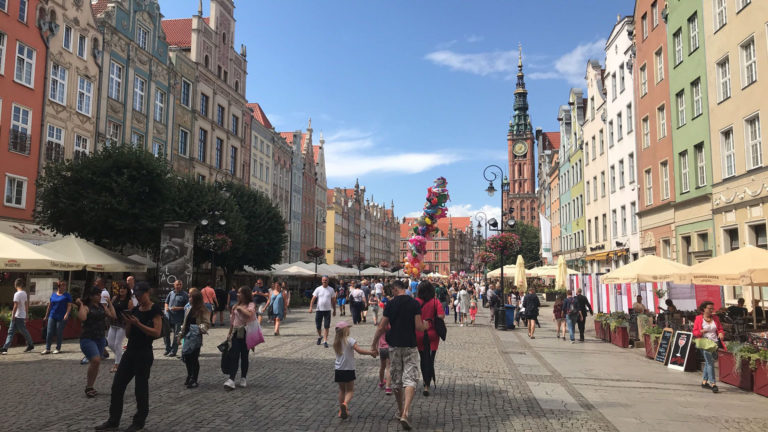
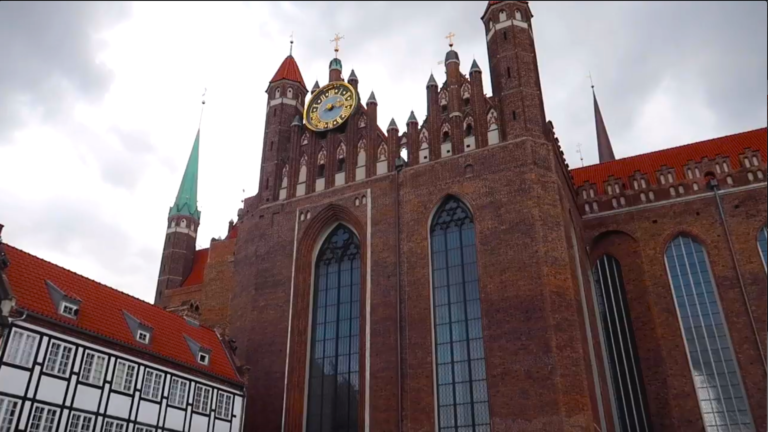

If you have not heard or even thought of visiting Gdańsk do not fret, Gdańsk is usually overlooked by many travelers (us included!) but Gdańsk has many things to do for all kinds of travelers, things from cultural sightseeing to eating delicious food. I break down the top things to do if you find yourself in Gdańsk.
Long Market
This long cobblestone street feels like straight out of a Disney movie (at least that is what I thought the first time I set foot there). Here you can find many restaurants, cafes, and other historical landmarks.
Basilica of St. Mary’s Church
The Basilica of St. Mary’s Church is one of the three largest churches in the world. Just like the Main Tower Hall, you can climb its tower but this one is a lot higher, 408 steps to be exact!
In the beginning, the stairs are a bit narrow when you first start to ascend (I was feeling a bit claustrophobic) but after a few minutes it gets wider and it becomes more enjoyable.
In conclusion, I really enjoyed our time in Gdańsk, the scenery was amazing, the local food and drinks were delicious, the people in the town were very welcoming. I totally underestimated Gdańsk and what the city provided as a travel destination, with affordable prices and major locations at walking distances I highly recommend visiting the city of Gdańsk.
About the author

My name is Harsh I am a Front End Developer at Chatbot Developer at Scholify.